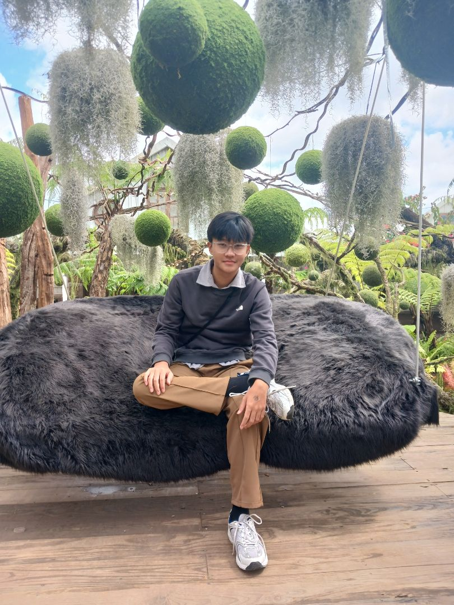

I'm currently in my first year pursuing a Cyber Security diploma in
Singapore Polytechnic.
I'm an international student, have personal experience of disaster and
tragedy due to energy insufficiency.
Therefore, I am passionate about energy conservation and want to
maintain a sustainablea and healthy planet.
